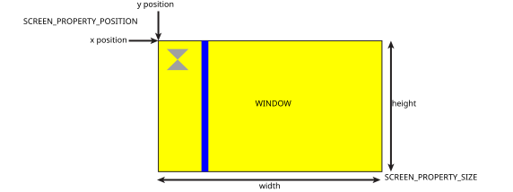
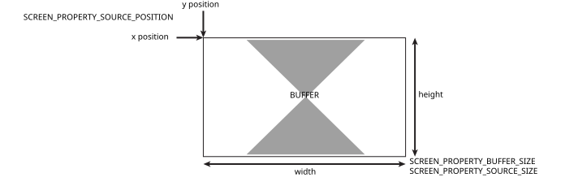

Applications use windows to display content. Some properties determine the size and positioning of your window and its content. Other properties determine the look and interpretation of your window's content.
It's important to know that there are two coordinate systems referenced by window properties. Choosing the values to set for your window properties is a lot easier, and will make more sense, if you know which coordinate system you're working in.
Display-related properties are in reference to the display coordinate system. These properties use values that are relative to the display coordinates (i.e., relative to the dimensions of your display). For top-level windows, some of these properties are obviously size and position. A top-level window's size and position indicate the location of window as shown on your display.

The following display-related properties are always relative to the parent window (the window one above it in its hierarchy):
| Window property | Description |
|---|---|
| SCREEN_PROPERTY_CLIP_POSITION |
The x and y positions, in pixels, of the top left corner of your clip rectangle relative to your parent window; typically set by the parent window (defaults to (0, 0)). |
| SCREEN_PROPERTY_CLIP_SIZE |
The width and height, in pixels, of the rectangle relative to your parent window that you don't want clipped. This clip rectangle is the area of your window that you intend to display and is typically set by the parent window. |
| SCREEN_PROPERTY_GLOBAL_ALPHA |
The global transparency value that's used to blend the source onto the destination. The global transparency of a child window is combined with the global transparency of the parent window. |
| SCREEN_PROPERTY_POSITION |
The x and y positions (in pixels), relative to the parent, of the top left corner of your window; typically set by the parent window (defaults to (0, 0)). |
| SCREEN_PROPERTY_SIZE |
The width and height, in pixels, of your window; typically set by the parent window (defaults to the window's buffer size). |
| SCREEN_PROPERTY_VISIBLE |
The indicator of whether the window should be displayed; typically set by the parent window. A child window is visible only when the associated parent window is visible and if the parent makes the child visible. |
| SCREEN_PROPERTY_ZORDER |
The z-order of a window is relative to its parent window. For example, a positive value will place the child on top of (or above) its associated parent window. Conversely, a negative z-order puts the child window underneath the parent window. The z-order has no units associated with it. |
Content-related properties are in reference to the source (or buffer) coordinate system. These properties use values that are relative to the source of your window content. This source is usually the contents of your window buffer. So for example, the size and position of the content-relative properties indicate the location of the region within your window buffer. The size of your window buffer is usually, but not necessarily, the same as your source.

The following are content-related properties:
| Window property | Description |
|---|---|
| SCREEN_PROPERTY_ALPHA_MODE |
The indicator of how the alpha channel should be interpreted. Refer to Screen alpha mode types. |
| SCREEN_PROPERTY_BRIGHTNESS |
The brightness adjustment of a window, defined as an integer in the range of [-255..255]. |
| SCREEN_PROPERTY_COLOR_SPACE |
Specifies the color organization of your buffer. Refer to Screen color space types. |
| SCREEN_PROPERTY_CONTRAST |
The contrast adjustment of a window, defined as an integer in the range of [-128..127]. |
| SCREEN_PROPERTY_FLIP |
The indicator to flip the contents of the window. |
| SCREEN_PROPERTY_HUE |
The hue adjustment of a window, defined as an integer in the range of [-128..127]. |
| SCREEN_PROPERTY_MIRROR |
The indicator to whether the contents of the window are mirrored (flipped horizontally). |
| SCREEN_PROPERTY_PROTECTION_ENABLED |
Indicates whether authentication is to be requested before the content of your window can be displayed. Authentication is requested when the window is posted and its SCREEN_PROPERTY_VISIBLE property indicates that the window is visible. Your buffer property SCREEN_PROPERTY_PROTECTED indicates that protection of content is required. Your window property SCREEN_PROPERTY_PROTECTION_ENABLED determines the level of protection that's required. In order to provide protection, Screen needs a secure link as well as a display that supports the levels of protection required. If the level of protection required by the window can't be met by the display, then the content of your window will be blanked. |
| SCREEN_PROPERTY_ROTATION |
The current rotation, in degrees, of the window's content. Window rotation doesn't affect the size or position of the window; only the content of the window is rotated. Screen applies scaling on the content to fit the bounds of the window where applicable. The rotation value is one of: 0, 90, 180, 270 degrees clockwise. The rotation of a child window is relative to that of its parent. The following are considered child windows:
|
| SCREEN_PROPERTY_SATURATION |
The saturation adjustment of a window, defined as an integer in the range of [-128..127]. |
| SCREEN_PROPERTY_SOURCE_CLIP_POSITION |
The x and y positions of the top left corner of your source clip rectangle relative to your window buffer; typically set by your window itself (defaults to (0, 0)). |
| SCREEN_PROPERTY_SOURCE_CLIP_SIZE |
The width and height, in pixels, of a rectangle relative to your window buffer that you don't want clipped. This source clip rectangle is the area of your window buffer that you intend to display and is typically set by your window itself (defaults to the buffer size). |
| SCREEN_PROPERTY_SOURCE_POSITION |
The x and y positions of the top left corner of your source rectangle relative to your window buffer; typically set by your window itself (defaults to (0, 0)). |
| SCREEN_PROPERTY_SOURCE_SIZE |
The width and height, in pixels, of a rectangle relative to your window buffers. This source rectangle is the area that you intend to display. The size of your source rectangle may extend beyond the size of your window buffers and is typically set by your window itself (defaults to the buffer size). |
| SCREEN_PROPERTY_TRANSPARENCY |
The way that the alpha channel of your window is used to combine your window with other windows or the background color underneath. Refer to Screen transparency types. Note that actual transparency applied is dependent on your hardware. |